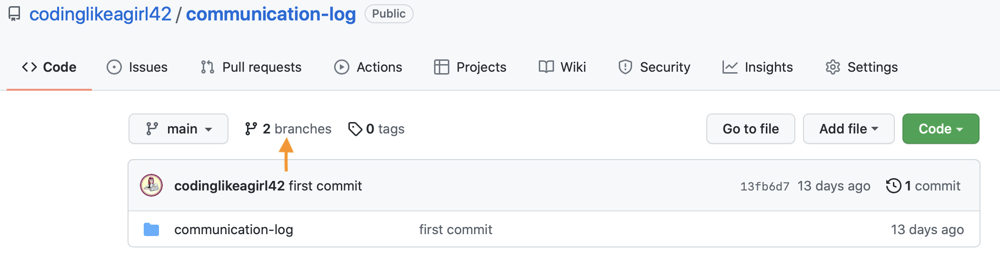
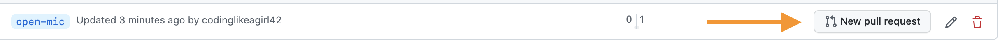
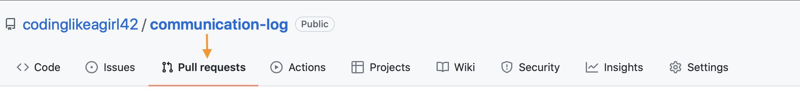

15.8. Studio: Communication Log (continued)¶
Congrats! You have successfully created a GitHub repo and started the collaboration process. The more you practice these steps, the easier and faster this process becomes.
As we progress through the rest of the studio, you will be working with your partner in the same code base. You will push and pull, you will create branches. You might merge your changes, and if you might create conflicts, you will resolve them.
Good luck!
Warning
As you go through these steps, you’ll be working with branches. It’s very
likely you will make changes to the code only to realize that you did so in the
wrong branch. When this happens (and it happens to us all) you can use
Git stash to cleanly move your changes to another branch. Read about how
to do so in our Git Stash tutorial.
15.8.1. Step 7: Pull Pilot’s Line and Add Another Line¶
- Control:
You might notice you don’t have the second line of code in your copy of the project on your computer. Let’s fix that.
Go to the terminal and enter this command to
pulldown the updated code into your local git repository. Use the commandgit pull origin main.$ git pull origin main remote: Counting objects: 3, done. remote: Compressing objects: 100% (2/2), done. remote: Total 3 (delta 1), reused 3 (delta 1), pack-reused 0 Unpacking objects: 100% (3/3), done. From github.com:chrisbay/communication-log e0de62d..e851b7e main -> origin/main Updating e0de62d..e851b7e Fast-forward communication-log.sln | 1 + 1 file changed, 1 insertion(+)
Now, in your editor, add a third line to the communication. Then
add,commit, andpushit up.
You can have your story go anywhere! Try to tie it in with what Pilot wrote, without discussing with them any plans on where the story will go.
15.8.2. Step 8: Do It Again: Pull, Change, and Push!¶
- Pilot:
You might notice now you don’t have the third line on your computer.
Go to the terminal and enter this command to pull in the changes that Control just made. Use the command
git pull origin main.$ git pull origin main remote: Counting objects: 3, done. remote: Compressing objects: 100% (2/2), done. remote: Total 3 (delta 1), reused 3 (delta 1), pack-reused 0 Unpacking objects: 100% (3/3), done. From github.com:chrisbay/communication-log e851b7e..167684c main -> origin/main Updating e851b7e..167684c Fast-forward communication-log.sln | 1 + 1 file changed, 1 insertion(+)
Add a fourth line to the log. Again, be creative, but no planning!
Then
add,commit, andpushyour change.
You can both play like this for a while! Feel free to repeat this cycle a few times to add to the story.
15.8.3. Step 9: Create a Branch In Git¶
This workflow is a common one in team development situations. Do professional developers wait for newly pushed changes before they start any work? That would be a drag. Instead, branches allow for simultaneous work.
- Pilot:
While Control is working on an addition to the story, make another change.
Create a new branch. Recall that a branch is a separate “copy” of the codebase. You can commit to without affecting code in the
mainbranch.$ git checkout -b open-mic Switched to a new branch 'open-mic'This command creates a new branch named
open-mic, and switches your local repository to use that branch.Update the background color of the console, and update the
Hello World!statement to something more exciting.:Console.BackgroundColor = ConsoleColor.Your-Choice-Here;
Stage and
committhese changes. Push your changes to the remote repo usinggit push origin open-mic. Note that the last command is a bit different than what we’ve used before (git push origin main). The final piece of this command is the name of the branch that we want to push to GitHub.$ git add . $ git commit -m 'Changed background color' $ git push origin open-mic
- Control and Pilot
- To verify the new branch has been successfully pushed up in your terminal, pull down the latest main.
- Control, you will need to run the command
git branch -ato see all branches in this codebase. - Pilot, run the command
git branch. Is your new branch in the terminal? - You can also verify the branch in GitHub, by clicking on the Branches button about the repo code.
Great! Now let’s show the other player your work in GitHub and ask them to merge it into the main branch.
15.8.4. Step 10: Create a Pull Request In GitHub¶
- Pilot:
In your browser, go to the GitHub project and click on Branches and make sure you see the new branch name, open-mic. This option will be located next to the button that says “main”.
On the Branches page, click New Pull Request to begin the process of requesting that your changes in the
open-micbranch be incorporated into themainbranch.Add some text in the description box to let Control know what you did and why. Click the Create pull request button.
GitHub will take you to your new pull request. Now you can wait for Control.
15.8.5. Step 11: Merge the Pull Request¶
- Control:
Go to the repo in GitHub. Click on Pull Requests. It is located above the repo files.
Explore this page to see all the information GitHub shows you about the pull request.
Look for the new PR (pull request) from Pilot. Click on the title of the request. This will bring you to the PR page.
Examine this page, you should see any commits made by Pilot. Look for verification that you can merge this branch. You should see a green circle with a check the message “This branch has no conflicts with the base branch”.
If you are able to merge, click the button that says “Merge pull request”.
A textbox will pop up containing a message about this merge. You can change any of the text if you want.
Click “Confirm merge”
Upon a successful merge, you should see a screen similar to the following: “Pull request successfully merged and closed”.
The changes from open-mic are now in the main branch, but only in the remote repository on GitHub.
You will need to pull the updates to your main for them to be present locally by using git pull origin main.
$ git checkout main $ git pull origin main
Git is able to merge these files on its own. Your git output will show you the changes in your files.
- Pilot
- Refresh your GitHub and note the changes on your page. Your pull request will no longer be visible because it has been merged into the main branch.
- Return to your terminal and pull down the new main branch changes using the following command:
git pull origin main.
Congrats! You successfully collaborated with a teammate to create a joined codebase. Great work!
You are ready to try the Bonus Mission on the next page. Good luck!